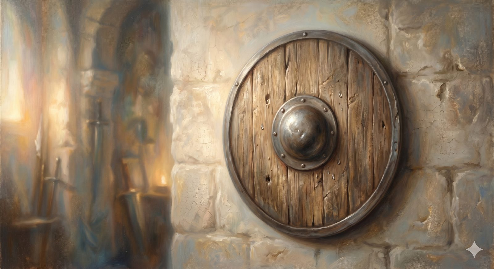

The Apostles' Creed
The oldest and plainest weapon in the armory — the baptismal confession, the gospel in its fewest words.
"...holding fast the word of life..." Philippians 2:16 (ESV)
The first weapon a pilgrim is handed in this room is also the oldest and the plainest — not a blade for the attack, but a shield for the defense: the Apostles' Creed. It is the confession the church has placed in the hands of new believers at their baptism for as long as anyone can trace, the words spoken over the water, the first thing a Christian learns to say. It is worn smooth by the grip of countless generations, and that very plainness is its strength.
The Apostles' Creed · ancient; received form c. 700s
I believe in God, the Father almighty, creator of heaven and earth.
I believe in Jesus Christ, his only Son, our Lord, who was conceived by the Holy Spirit, born of the Virgin Mary, suffered under Pontius Pilate, was crucified, died, and was buried; he descended to the dead. On the third day he rose again; he ascended into heaven, is seated at the right hand of the Father, and will come to judge the living and the dead.
I believe in the Holy Spirit, the holy catholic Church, the communion of saints, the forgiveness of sins, the resurrection of the body, and the life everlasting. Amen.
What kind of weaponA shield, not a sword
Notice what this creed is not. It does not argue, define, or split fine distinctions; it makes no mention of homoousios or "two natures" or any of the precise terms the later creeds were forced to forge. It simply confesses — Father, Son, and Spirit; creation, incarnation, cross, resurrection, ascension, return; the church, forgiveness, and the life to come. It is the shape of the whole gospel in the fewest possible words, the trunk from which every later creed is a branch. That is why it is the shield: it is what a believer holds up to say, simply and without elaboration, this is the faith I have been baptized into.
In plain terms
The Apostles' Creed isn't trying to win an argument. It's the basic outline of Christian belief, said at baptism — the thing you can hold onto when you can't remember anything more complicated. Old, plain, and load-bearing.
A line worth pausing on"He descended to the dead"
One phrase puzzles many who say it: that Christ "descended to the dead" (older translations say "descended into hell"). It does not mean Jesus was punished further after the cross. The older English word stood for the realm of the dead — the grave, the place of the departed — and the line confesses that Jesus truly died: not a swoon, not an appearance, but a real death, entering fully into death's domain as one of the dead, before truly rising on the third day. It guards the same truth the Interpreter's House examined — that the death and resurrection were real events, not metaphors.
A word in it that has shifted"The holy catholic Church"
Protestant pilgrims sometimes stumble at the word catholic, hearing it as the name of a particular communion. In the creed it carries its old and literal sense: universal — from the Greek for "according to the whole." To confess the holy catholic church is to confess the one whole church of every time and place, the entire communion of saints across all the centuries — the very cloud of witnesses kept in the Record Room down the hall. It is not a surrender of Protestant conviction; it is the older, larger word that all branches of the church still share.
The plainest weapon in the room — what a believer holds up to say, simply, "this is the faith I was baptized into."
This is the shield to take up first, because it is the one a pilgrim can always carry, even with no training and no fine theology — even when the more intricate weapons are still strange in the hand. The sharper instruments hang nearby, forged for the particular battles that came later. The first of those is the sword.